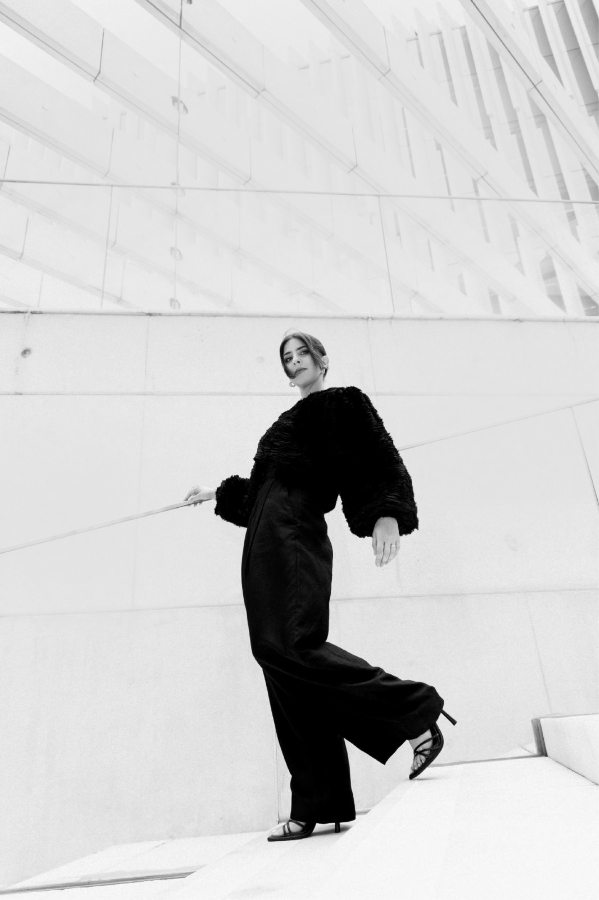

HI, I'm
LUANA
Product & UX/UI Designer
Currículo ↗Desenho produtos digitais
com o rigor de quem já
desenhou edifícios.

COMPETÊNCIAS E FERRAMENTAS
Design
Figma (Auto-layout, Variáveis) - Design Thinking - Design Systems - StyleGuide
UX Research
User Flows - Wireframing - Heurísticas de Nielsen - Testes de Usabilidade
Processo & Agilidade
Jira - Scrum/Kanban - DesignOps
Técnico
HTML - CSS - JavaScript (noções)
Inteligência Artificial
Figma Make - Claude - ChatGPT - Midjourney - Notion AI
Trabalhos
selecionados
Estudos de caso de product design e 8+ anos de pensamento sistémico e estruturado.
-
RESULTADO +15% conversões Ver projeto →
Paparico — Redesign da Landing Page
Reestruturei a presença digital do negócio para construir confiança e gerar vendas diretas, da investigação com utilizadores a um protótipo interativo validado.
-
RESULTADO 4h/dia poupadas Ver projeto →
Paparico — Plataforma SaaS Interna
Discovery, user flow e wireframing de um sistema de gestão interno que automatizou processos manuais de pedidos e faturação.
-
RESULTADO Estudo de caso Ver projeto →
NOS — Repensar a Experiência de Compra de Pacotes
Conceito de redesign da jornada de compra de pacotes para uma das maiores operadoras de telecomunicações de Portugal.
-
RESULTADO Estudo de caso Ver projeto →
Apoia+ — Redesenhar o Acesso aos Apoios Públicos
Projeto de grupo de pós-graduação que centraliza a informação dispersa sobre apoios públicos para micro e pequenas empresas — investigação, estratégia de negócio e identidade de marca.

EXPERIÊNCIA
- Em curso Pós-Graduação, Web UX/UI Design IADE — Universidade Europeia
- 2026 UX/UI Designer Lisbon School of Design
- 2024 — 2026 Cofundadora & Product Designer Paparico
- 2019 — 2025 Cofundadora & Arquiteta Atelier Bossa
- 2025 Bootcamp UX/UI Escola EDIT